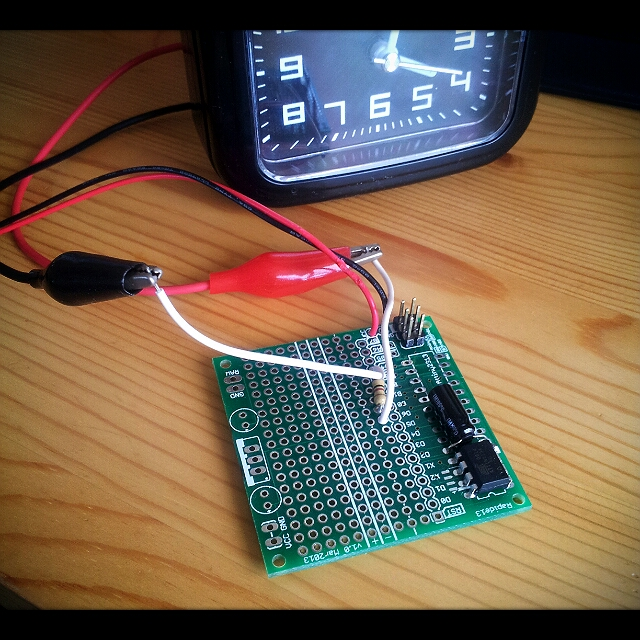

Summary
It's a clock with the sec that don't tick every second. Although keeping accurate time (for minutes and hours) the clock sometimes doesn't tick, stops, and then compensates for all missing ticks in a burst. Supposed to turn the spectator crazy, and was in
Dr. Vetinari's waiting room.
Inspirations (thanks to them, I just did my version inspiring from their works : all credits go to them!):
Key things to know
- You have to make the electro-magnet ALTERNATE each tick. Just one direction won't work. Here's a usually accepted schema it seems :
- Pick 2 pins of you uC (for sake of sample, PB0 and PB1)
- Wire directly PB0 to one side of the coil, and put a 100ohm between PB1 and the other side of the coil. The purpose of the resistor is to limit current and diminish the effect of collapsing of the magnetic field of the coil (it seems)
- Beware of the voltage : during my tests, I could notice that 5v make the clock go backward ! And the same code and circuit running on 2 AAA battery (say less than 3v) runs in the correct direction ... go figure.
- You need a few millisec between each tick : there's a physical movement with a backward feedback, too close ticks will not leave time to the tick to move forward. Seems that in my case 200ms do the trick, less is not enough.
Code
As usual on Google code's Subversion :
https://code.google.com/p/alanarduinotools/source/browse/#svn%2Ftrunk%2FAttiny13%2FDrVetinaryClock